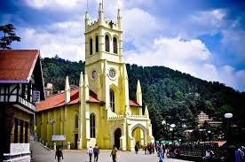
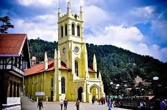
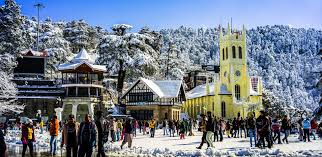
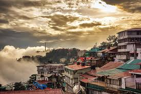
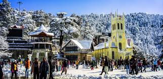
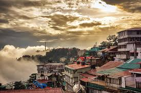

Mall Road & Ridge
Central promenade with shops, cafés and open viewpoints.
Shimla delivers a slow hill-town rhythm with colonial-era architecture, panoramic viewpoints and pine-lined roads.
Mall Road, Ridge, Jakhu Hill and the toy train route provide clean, simple mountain experiences suited for relaxed trips.
Central promenade with shops, cafés and open viewpoints.
Hilltop Hanuman temple with wide city and valley views.
Narrow-gauge heritage route with forests and tunnels.
Nearby hill spot for snow (in winter) and light adventure parks.
Simple hill walk with cafés, viewpoints and colonial buildings.
Steep but short route to a hilltop temple with calm valley views.
Nearby viewpoint area for photos and light activities.
Short hill break patterns.
Quick
Relaxed
4–5 days
Central access and easy walking routes.
Best for first-timers.
Quieter hillside hotels with valley views.
Good mid-range options.
Colder climate and open landscapes.
Ideal for winter trips.

 



 



Movement and weather habits.